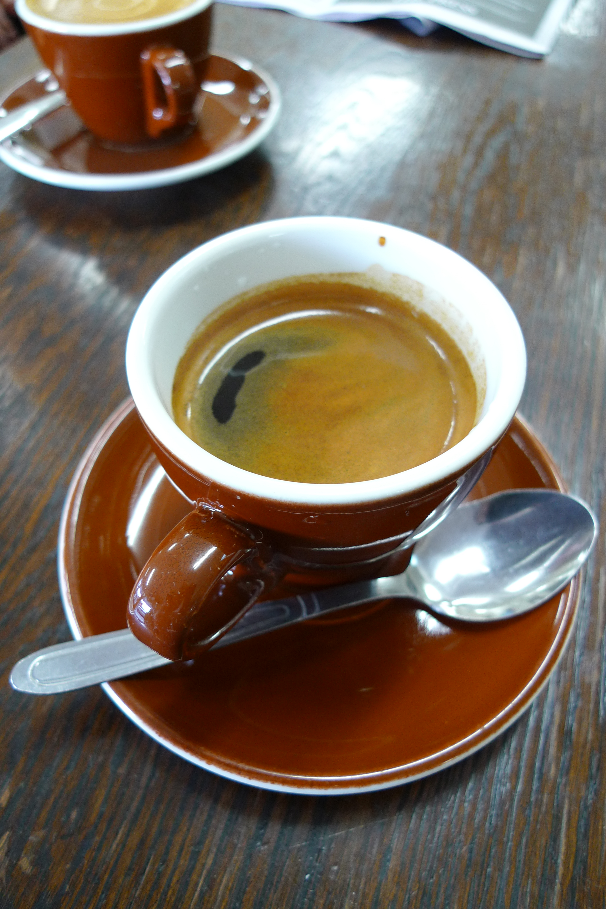

Sok szeretettel köszöntünk a honlapon! Itt megismerkedhet a kávé kínálatunkal!
Kávéfajták
☕ Espresso
Az eszpresszó egy olasz eredetű kávéfőzési módszer, melynek során kis mennyiségű, közel forrásban lévő vizet
9-10 bar nyomás alá nyomnak át a finomra őrölt kávészemeken. Az eszpresszó sokféle kávébabból és pörkölési
fokból készíthető.

☕ Americano
A Caffè Americano, Café americano, caffè all'americana vagy csak egyszerűen Americano (amerikai kávé) egy
espressóital, amely Ausztráliában és Új-Zélandon hosszú feketeként vált ismertté. A név eredete abból az
amerikai sztereotípiából ered, hogy az amerikaiak hígítva szeretik a kávét. Ennek van némi történelmi
megalapozottsága is, hiszen a II.Világháborúban Olaszországban állomásozó amerikai hadsereg katonái vízzel
hígított espresso kávét fogyasztottak, ez állt a legközelebb az általuk megszokott és kedvelt kávéitalhoz.
☕Cappuccino
A cappuccino egy eszpresszó alapú kávéital, amely Olaszországból származik, és párolt tejhabból készül. Az
ital variációi közé tartozik a tej helyett tejszín használata, nem tejalapú tejpótló, valamint fahéjjal vagy
csokoládéporral történő ízesítés.
☕Latte Macchiato
A latte macchiato nagyon gusztusos kávéköltemény. A felhabosított tejet általában egy magas falú üvegpohárba
töltik, az eszpresszót pedig lassan, kanál segítségével csorgatják a habos tejbe, így alakulnak ki a szépen
elkülönülő rétegek. A név olaszul egyébként foltos tejet jelent.